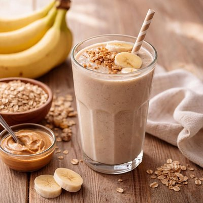

Batido de Plátano y Avena

El batido de plátano y avena es una bebida energética y nutritiva, ideal para comenzar el día o como colación antes de entrenar. Gracias a la combinación de carbohidratos complejos, fibra y proteínas, proporciona energía sostenida y ayuda a mantener la sensación de saciedad por más tiempo.